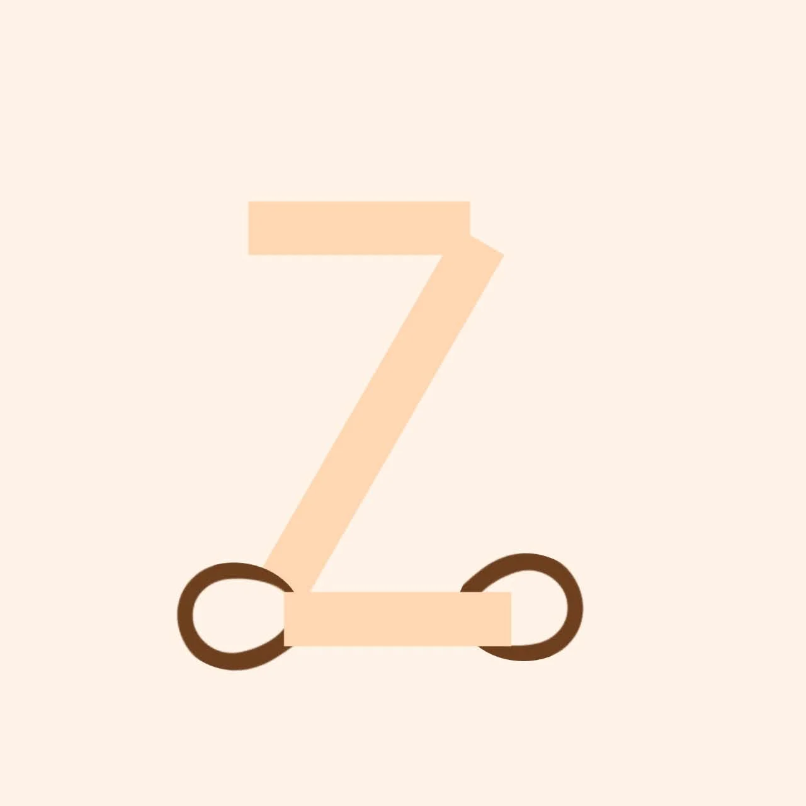
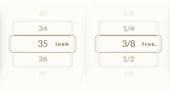
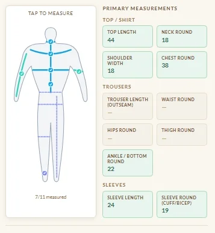
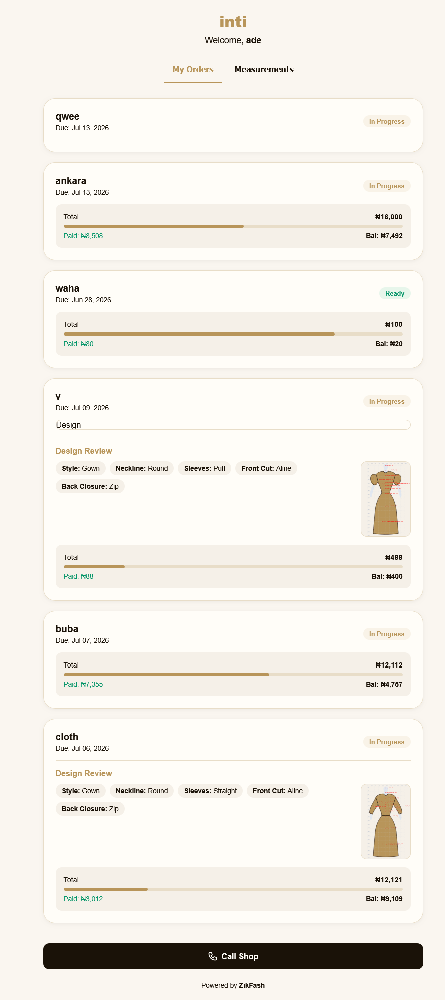
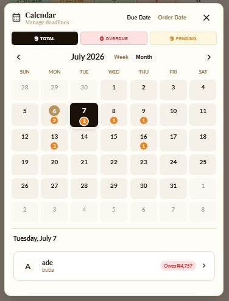
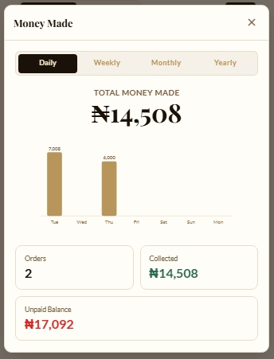
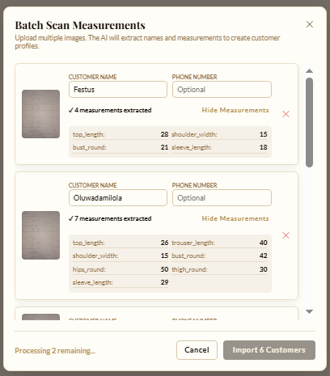

ZikFashThrow away those messy measurement books. ZikFash is the premium digital measurement book designed specifically for professional tailors and fashion designers.

Stop typing numbers on tiny keyboards. Our revolutionary visual tape measure lets you swipe to your exact measurement instantly. Impeccable accuracy with zero friction.

Don't guess where a measurement belongs. Tap the exact body part on our interactive 2D anatomical map to log measurements visually.
ZikFash tracks every commission from deposit to collection. Know exactly what's owed.
ZikFash sends professional status updates and reminders to your clients instantly.
ZikFash works in the deepest corners of the shop. No internet required after first load.
Securely back up your measurements and access your ledger from multiple devices.
A seamless process from walk-in to handover.
Snap a picture of your old paper book to digitize their measurements instantly, or use our blazing fast visual Tape Scroll to capture new ones without typing.
Use the Style Studio to visually construct their garment. Instantly apply their fabric to the digital model to show them exactly what it will look like.
Log their deposit into the integrated ledger and instantly generate a beautiful PDF receipt sent straight to their WhatsApp.
ZikFash is packed with pro tools to run your entire tailoring empire.
Stop answering "Is my dress ready?" texts. Give clients an auto-generated, secure Portal link to track their measurements and check order status live.

A built-in visual scheduler. Instantly filter by Total, Overdue, or Pending jobs across weekly or monthly views so your shop runs like a factory.

Track your money flawlessly. View Daily, Weekly, Monthly, and Yearly revenue breakdowns complete with visual bar charts to see your total money made at a glance.

Have 50 pages of old measurements? Don't type them. Select multiple photos of your old book, and our AI will instantly extract names and measurements to create digital profiles in bulk.

ZikFash is not just a book to save numbers—it is your personal smart assistant.
A visual builder that prevents impossible combinations (like a waistcoat with sleeves). Build the perfect garment piece-by-piece with our interactive style nodes.
Don't guess what the fabric will look like. Just snap a picture of the customer's material, and ZikFash will generate a photorealistic preview of it applied to their chosen style.
Describe a style idea to pull visual inspirations from the web, or upload a reference photo for our AI to automatically annotate the design paths—allowing you to instantly build it in the Studio.
Tired of starting from scratch? ZikFash learns your shop's common baseline proportions to pre-fill sizes instantly, and mathematically flags impossible proportions before you touch a pair of scissors.
Stop guessing how much fabric to tell clients to buy. ZikFash analyzes their exact body proportions and style complexity to calculate the required yards automatically.
Draw directly on inspiration pictures. Circle sleeves, cross out necklines, and add notes right on the image so your apprentices know exactly what to sew.
Saving measurements, working without data, and sending WhatsApp receipts will always be completely free for you.
Special features (like showing fabric on styles or scanning handwritten books) use AI Coins.
Yes. 100% offline. Add customers, take measurements, and log orders without an internet connection. Only cloud backups and AI features require data.
Absolutely. Privacy-first by design. Your data lives on your device. We do not sell your data, and we do not require you to create an account just to use the core app.
Yes. Your data is yours. You can export your measurement books and take your customer records with you anytime. We do not lock you in.
No. ZikFash features a custom "Touch Tape Scroll" and an interactive "SVG Body Map". You visually select measurements without touching your keyboard.
Your data is safe. If you opted into cloud backups, simply sign in on your new device and your entire customer ledger and financial history will restore instantly.
Yes. ZikFash is so intuitive that your apprentices can start taking visual measurements on day one, without needing to decipher confusing shorthand.